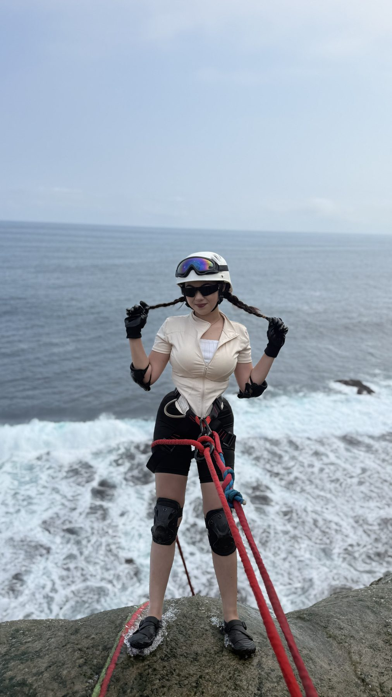

Paket utama
Canyoneering Umbul Waru
mulai Rp300.000 per orang
- Helm, harness, dan tali
- Pemandu lokal
- Dokumentasi foto dan video
- Satu kali makan, kopi dan teh
Harga dari publikasi operator (Sept 2025). Titik kumpul basecamp Sidomulyo atau Stasiun Blitar.